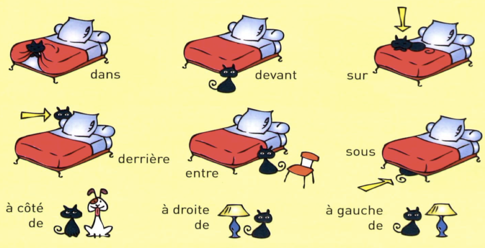

动词变位
第一组规则动词
| regarder | |
|---|---|
| je regarde | nous regardons |
| tu regardes | vous regardez |
| il/elle regarde | ils/elles regardent |
第二组规则动词
| choisir | choisi |
|---|---|
| je choisis | nous choisissons |
| tu choisis | vous choisissez |
| il choisit | ils choisissent |
第三组不规则动词
| être 直陈式 | été |
|---|---|
| je suis | nous sommes |
| tu es | vous êtes |
| il/elle est | ils/elles sont |
| être 命令式 | |
|---|---|
| - | (nous) soyons |
| (tu) sois | (vous) soyez |
| aller | allé |
|---|---|
| je vais | nous allons |
| tu vas | vous allez |
| il/elle va | ils/elles vont |
| avoir 直陈式 | eu /y/ |
|---|---|
| j'ai | nous avons |
| tu as | vous avez |
| il/elle a | ils/elles ont |
| avoir 命令式 | |
|---|---|
| (nous) ayons | |
| (tu) aie | (vous) ayez |
| faire | fait |
|---|---|
| je fais | nous faisons |
| tu fais | vous faites |
| il/elle fait | ils/elles font |
| prendre | pris |
|---|---|
| je prends | nous prenons |
| tu prends | vous prenez |
| il prend | ils prennent |
| partir | parti |
|---|---|
| je pars | nous partons |
| tu pars | vous partez |
| il part | ils partent |
| voir | vu |
|---|---|
| je vois | nous voyons |
| tu vois | vous voyez |
| il voit | ils voient |
| écrire | écrit |
|---|---|
| j'écris | nous écrivons |
| tu écris | vous écrivez |
| il écrit | ils écrivent |
| lire | lu |
|---|---|
| je lis | nous lisons |
| tu lis | vous lisez |
| il lit | ils lisent |
| dormir | dormi |
|---|---|
| je dors | nous dormons |
| tu dors | vous dormez |
| il dort | ils dorment |
| boire | bu |
|---|---|
| je bois | nous buvons |
| tu bois | vous buvez |
| il boit | ils boivent |
| venir（来） | venu |
|---|---|
| je viens | nous venons |
| tu viens | vous venez |
| il vient | ils viennent |
| descendre | descendu |
|---|---|
| je descends | nous descendons |
| tu descends | vous descendez |
| il descend | ils descendent |
| pouvoir（能） | pu |
|---|---|
| je peux | nous pouvons |
| tu peux | vous pouvez |
| il peut | ils peuvent |
| vouloir（想） | voulu |
|---|---|
| je veux | nous voulons |
| tu veux | vous voulez |
| il veut | ils veulent |
| dire（告诉） | dit |
|---|---|
| je dis | nous disons |
| tu dis | vous dites |
| il dit | ils disent |
| savoir（知道） | su |
|---|---|
| je sais | nous savons |
| tu sais | vous savez |
| il sait | ils savent |
| devoir（应该） | - |
|---|---|
| je dois | nous devons |
| tu dois | vous devez |
| il doit | ils doivent |
| connaître（认识） | connu |
|---|---|
| je connais | nous connaissons |
| tu connais | vous connaissez |
| il connaît | ils connaissent |
| offrir（提供） | offert |
|---|---|
| j'offre | nous offrons |
| tu offres | vous offrez |
| il offre | ils offrent |
| préférer | préféré |
|---|---|
| je préfère | nous préférons |
| tu préfères | vous préférez |
| il préfère | ils préfèrent |
复合过去式
17 个用 être 引导的不及物动词
| aller/venir | allé |
|---|---|
| entrer/sortir | entré/sorti |
| arriver/partir | arrivé/parti |
| monter/descendre | monté/descendu |
| naître/mourir | né/mort |
| rester/passer | resté/passé |
| rentrer/revenir/retourner | rentré/revenu/retourné |
| tomber | tombé |
| devenir | devenu |
过去分词
| 不定式 | 过去分词 |
|---|---|
| vendre | vendu |
| vivre | vécu |
词汇
方位
se trouver 位于
aller tout droit 直走


au bord de 在边上
| 在……以南北东西 | 在……的南北东西部 |
|---|---|
| au sud de | dans le sud de |
| au nord de | dans le nord de |
| à l'est de | dans l'est de |
| à l'ouest de | dans l'ouest de |
衣服
| vêtement | 衣服 |
|---|---|
| des baskets | 运动鞋 |
| une chemise | 衬衫 |
| des lunettes | 眼镜 |
| un jean | 牛仔裤 |
| un manteau | 大衣 |
| un pantalon | 长裤 |
| une robe | 裙子 |
| un tee-shirt | T恤 |
颜色

时间
| ce matin | 今早 |
|---|---|
| ce midi | 今天中午 |
| ce soir | 今晚 |
| ce mois | 这个月 |
| cette semaine | 这周 |
| cette année | 今年 |
| l'après-midi | 下午 |
| hier | 昨天 |
| aujourd'hui | 今天 |
| demain | 明天 |
| l'année dernière | 去年 |
| l'année prochaine | 明年 |
| tout | - |
|---|---|
| tous les jours | 每一天 |
| tous les samedis soirs | 每周六晚 |
| toute la journée | 一整天 |
| toute l'année | 一整年 |
| 周一 | 周二 | 周三 | 周四 | 周五 | 周六 | 周日 |
|---|---|---|---|---|---|---|
| lundi | mardi | mercredi | jeudi | vendredi | samedi | dimanche |
| 时间 | 口语表示法 |
|---|---|
| 6:30 | six heures et demie |
| 10:15 | dix heures et quart |
| 3:45 | quatre heures moins le quart |
交通工具

演奏，运动

食物
| du beurre | 黄油 |
|---|---|
| de la farine | 面粉 |
| du sucre | 糖 |
| du sel | 盐 |
| de la viande | 肉 |
| du vin | 酒 |
| du riz | 米饭 |
| du poisson | 鱼肉 |
| du fromage | 奶酪 |
| des céréales | 谷物 |
| du lait | 牛奶 |
| du pain | 面包 |
| de la confiture | 果酱 |
短语
| donner qch à qn | 给某人某物 |
|---|---|
语法
形容词前置（beau/nouveau/vieux），名词前的复数不定冠词 des 变为 de
des nouveaux films -> de nouveaux films
绝对否定：否定句中，直接宾语前的不定冠词/部分冠词变为 de
Ils ont des lunettes. -> Ils n'ont pas de lunettes.
动词与主语人称代词倒装后元音相撞，加 t
Comment va-t-elle au bureau?
复杂倒装：名词主语 + 谓语动词 + 主语人称代词
Comment Farid va-t-il au bureau?
Isabelle travaille-t-elle à Londres?
我知道他没有给你说
Je sais qu'il ne t'a pas dit.
时态，代词，否定句
avoir
j'ai regardé -> je n'ai pas regardé
être
Oui, nous y sommes allés.
Non, nous n'y sommes pas allés.
COI（间接宾语人称代词）
Il parle à ses parents.
Il leur parle.
Il ne leur parle pas.
COI + 命令式
Tu me racontes cette histoire.
Raconte-moi cette histoire.
Ne me raconte pas cette histoire.
COI + aller（最近将来时）
Oui, je vais lui téléphoner.
Non, je ne vais pas lui téléphoner.
COI + avoir
Paul lui a téléphoné hier matin.
Je ne leur ai pas acheté ce livre.
Il ne nous a pas dit bonjour.